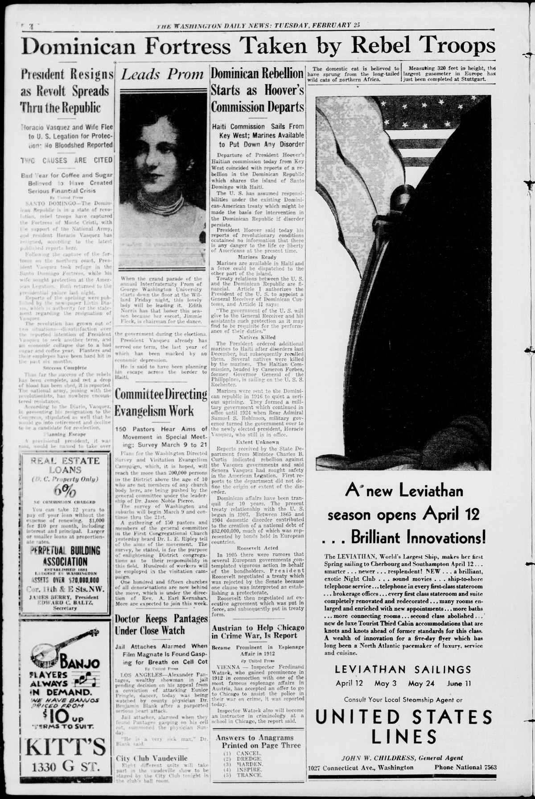

Dominican Rebellion Starts as Hoover Commission DepartsLa Rebelión Dominicana Comienza al Partir la Comisión de Hoover
The Washington Daily News. Washington, D.C., February 25, 1930. Page 4. Published by Washington Daily News Pub. Co. A daily newspaper, 1921–1972.The Washington Daily News. Washington, D.C., 25 de febrero de 1930. Página 4. Publicado por Washington Daily News Pub. Co. Periódico diario, 1921–1972. View the originalVer el original

The Washington Daily News reported that an uprising against Dominican President Horacio Vásquez had broken out, leading Señora Vásquez to seek refuge in the American Legation. The paper outlined treaty provisions authorizing a U.S.-appointed general receiver of customs with American protection, and recalled the 1916–1924 marine occupation under Admiral Samuel S. Robinson. The unrest coincided with the departure of the Forbes commission aboard the Rochester to investigate conditions in neighboring Haiti.El Washington Daily News informó sobre el estallido de un levantamiento contra el presidente dominicano Horacio Vásquez, lo que obligó a la señora de Vásquez a buscar refugio en la legación estadounidense. El diario reseñó las disposiciones del tratado que autorizaban a un receptor general de aduanas designado por Estados Unidos bajo protección norteamericana, y recordó la ocupación de los marines entre 1916 y 1924 bajo el mando del almirante Samuel S. Robison. Los disturbios coincidieron con la partida de la comisión Forbes a bordo del buque Rochester para investigar las condiciones en el vecino Haití.
FULL TEXT:TEXTO COMPLETO:
The Washington Daily News February 25, 193025 de febrero de 1930
DOMINICAN REBELLION STARTS AS HOOVER COMMISSION DEPARTSREBELIÓN DOMINICANA COMIENZA CUANDO LA COMISIÓN DE HOOVER PARTE
Haiti Commission Sails From Key West; Marines Available to Put Down Any DisorderLa comisión de Haití zarpa desde Cayo Hueso; Infantes de marina disponibles para sofocar cualquier desorden
Departure of President Hoover's Haitian commission today from Key West coincided with reports of a rebellion in the Dominican Republic which shares the island of Santo Domingo with Haiti.La partida hoy de la comisión haitiana del presidente Hoover desde Cayo Hueso coincidió con informes de una rebelión en la República Dominicana que comparte la isla de Santo Domingo con Haití.
The U. S. has assumed responsibilities under the existing Dominican-American treaty which might be made the basis for intervention in the Dominican Republic if disorder persists.Los Estados Unidos han asumido responsabilidades bajo el existente tratado dominico-estadounidense que podrían hacerse la base para la intervención en la República Dominicana si el desorden persiste.
President Hoover said today his reports of revolutionary conditions contained no information that there is any danger to the life or liberty of Americans at the present time.El presidente Hoover dijo hoy que sus informes de condiciones revolucionarias no contenían información de que haya peligro alguno para la vida o libertad de los estadounidenses en el presente momento.
Marines ReadyInfantes de marina listos
Marines are available in Haiti and a force could be dispatched to the other part of the island.Infantes de marina están disponibles en Haití y una fuerza podría ser despachada a la otra parte de la isla.
Treaty relations between the U. S. and the Dominican Republic are financial. Article I authorizes the President of the U. S. to appoint a General Receiver of Dominican Customs, and Article II says:Las relaciones de tratado entre los Estados Unidos y la República Dominicana son financieras. El Artículo I autoriza al Presidente de los Estados Unidos a nombrar un Receptor General de Aduanas Dominicanas, y el Artículo II dice:
“The government of the U. S. will give to the General Receiver and his assistants such protection as it may find to be requisite for the performance of their duties.”«El gobierno de los Estados Unidos dará al Receptor General y a sus asistentes tal protección como pueda encontrar requerida para el desempeño de sus deberes.»
Natives KilledNativos muertos
The President ordered additional marines to Haiti after disorders last December, but subsequently recalled them. Several natives were killed by the marines. The Haitian Commission, headed by Cameron Forbes, former Governor General of the Philippines, is sailing on the U. S. S. Rochester.El Presidente ordenó infantes de marina adicionales a Haití después de desórdenes en diciembre pasado, pero posteriormente los retiró. Varios nativos fueron muertos por los infantes de marina. La Comisión haitiana, encabezada por Cameron Forbes, antiguo Gobernador General de las Filipinas, está navegando en el U. S. S. Rochester.
Marines were sent to the Dominican republic in 1916 to quiet a serious uprising. They formed a military government which continued in office until 1924 when Rear Admiral Samuel S. Robinson, military governor turned the government over to the newly elected president, Horacio Vasquez, who still is in office.Infantes de marina fueron enviados a la república dominicana en 1916 para calmar un levantamiento serio. Formaron un gobierno militar que continuó en el cargo hasta 1924 cuando el Contralmirante Samuel S. Robinson, gobernador militar entregó el gobierno al recién elegido presidente, Horacio Vasquez, quien todavía está en el cargo.
Extent UnknownExtensión desconocida
Reports received by the State Department from Minister Charles B. Curtis indicated rebellion against the Vasquez governments and said Senora Vasquez had sought safety in the American Legation. First reports to the department did not define the origin or extent of the disorder.Informes recibidos por el Departamento de Estado del Ministro Charles B. Curtis indicaban rebelión contra los gobiernos de Vasquez y decían que la Señora Vasquez había buscado seguridad en la Legación estadounidense. Los primeros informes al departamento no definieron el origen o extensión del desorden.
Dominican affairs have been tranquil for 10 years. The present treaty relationship with the U. S. began in 1907. Between 1865 and 1904 domestic disorder contributed to the creation of a national debt of $32,000,000, much of which was represented by bonds held in European countries.Los asuntos dominicanos han estado tranquilos por 10 años. La presente relación de tratado con los Estados Unidos comenzó en 1907. Entre 1865 y 1904 el desorden doméstico contribuyó a la creación de una deuda nacional de $32,000,000, mucho de la cual estaba representada por bonos tenidos en países europeos.
Roosevelt ActedRoosevelt actuó
In 1905 there were rumors that several European governments contemplated vigorous action in behalf of the bondholders. President Roosevelt negotiated a treaty which was rejected by the Senate because one clause was interpreted as establishing a protectorate.En 1905 hubo rumores de que varios gobiernos europeos contemplaban acción vigorosa en nombre de los tenedores de bonos. El presidente Roosevelt negoció un tratado que fue rechazado por el Senado porque una cláusula fue interpretada como estableciendo un protectorado.
Roosevelt then negotiated an executive agreement which was put in force, and subsequently put in treaty form.Roosevelt entonces negoció un acuerdo ejecutivo que fue puesto en vigor, y posteriormente puesto en forma de tratado.